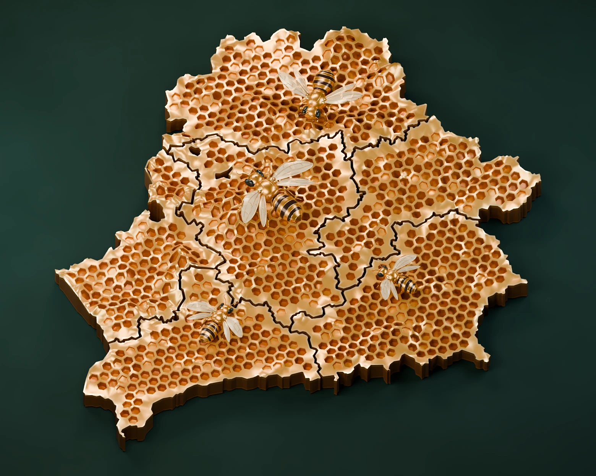
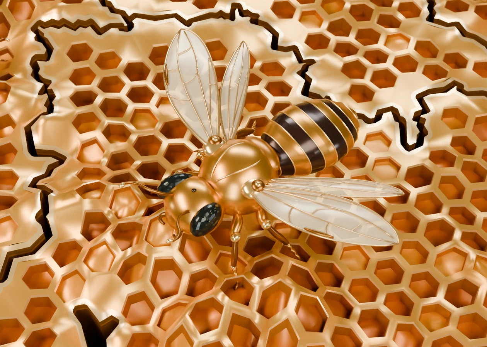

Скульптурная картография
Беларусь
в сотах
Рельефная картина для семьи Бориса Грызлова. Шесть областей складываются в единый силуэт, на сотах встречаются четыре пчелы.
Рассмотреть в 3DЦифровая скульптура/2026
Интерактивный зал
Анатомия рельефа
Поверните карту, взгляните на высоту сот сбоку или раздвиньте области, чтобы увидеть линии сборки.

Семейная композиция
Четыре пчелы
Две крупные фигуры обозначают супругов. Две миниатюры поменьше — их детей. Выберите имя, чтобы рассмотреть пчелу на карте.